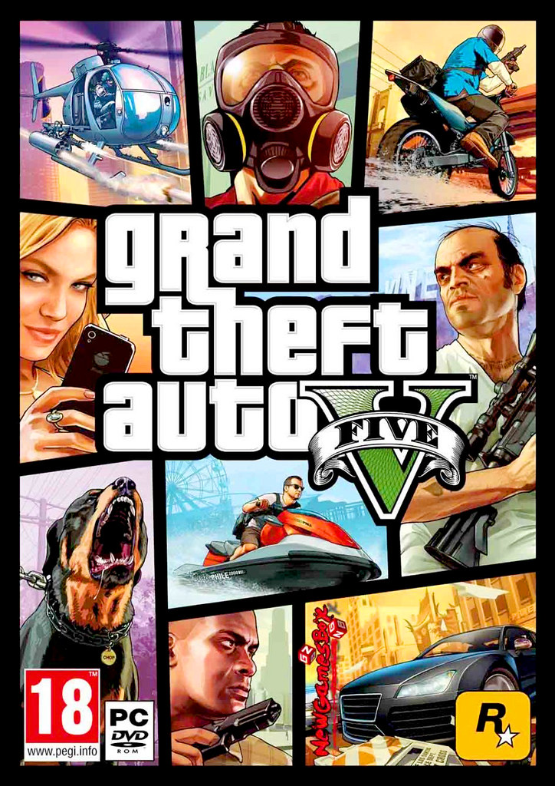
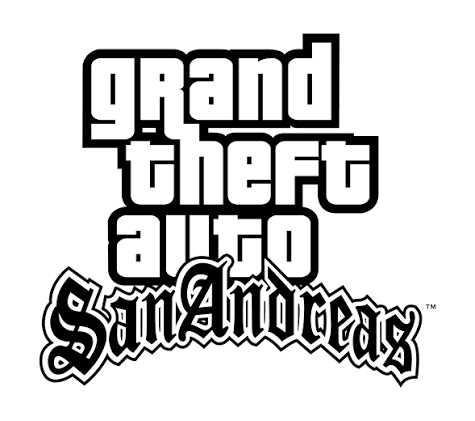
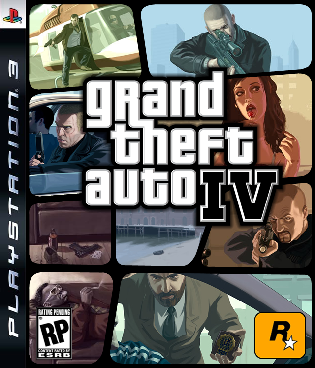
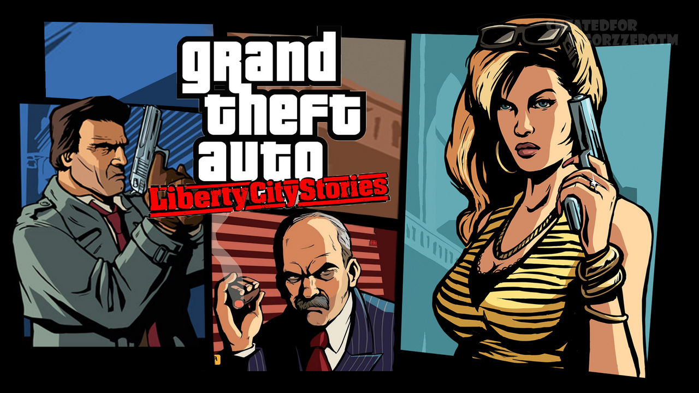
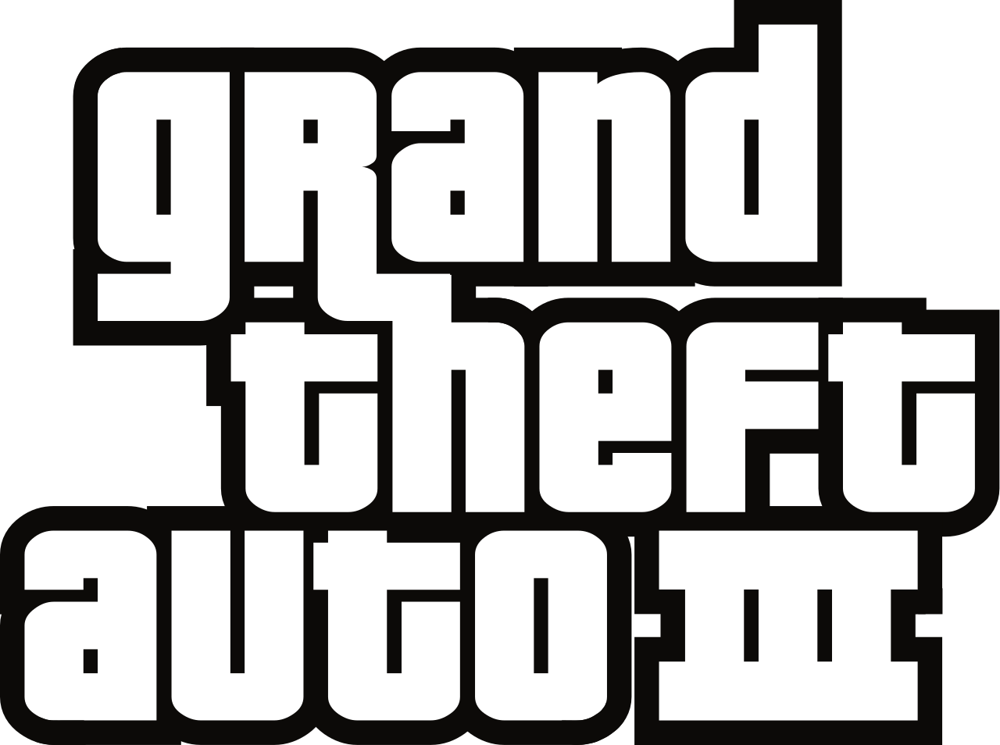
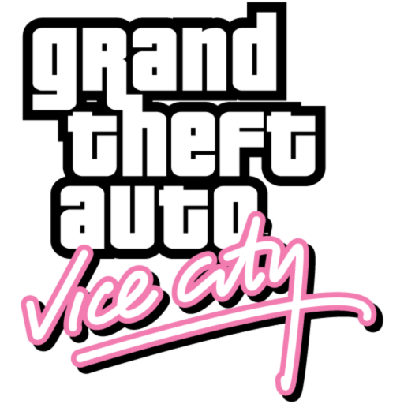

| Rank | Game | Release Year | Stars | Favorite Feature | Image |
|---|---|---|---|---|---|
| 1 | GTA V | 2013 | 5 Stars | being able to play as 3 different characters, and the sound track |  |
| 2 | GTA San Andreas | 2004 | 4 Stars | learn martial arts, go to the gym, and the ability to play co op with friends |  |
| 3 | GTA IV | 2008 | 3 Stars | the driving, picking items off the floor to use as weapons, and being able to go inside the statue of liberty |  |
| 4 | GTA Liberty City Stories | 2005 | 3 Stars | the different amount of weapons to choose from, and the cheat code you can use to make the moon huge |  |
| 5 | GTA III | 2001 | 2 Stars | Exploring the city and going into a carshop to get car fixed with a random color selection |  |
| 6 | GTA Vice City | 2002 | 1 Star | the miami beach vibe vice city had was the best it gave the game a colorful look |  |
My favorite GTA game is GTA V because I enjoyed being able to play as three different characters. Each character had something unique about them, which made the game more interesting. Switching between characters made the gameplay feel different because each character had their own personality.